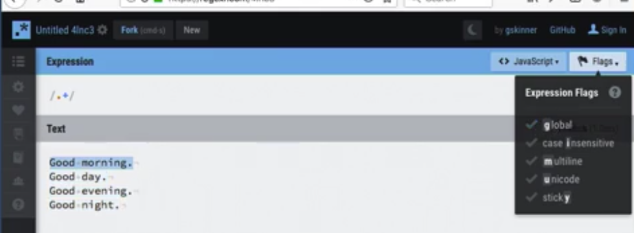
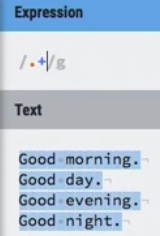
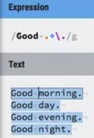
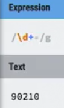
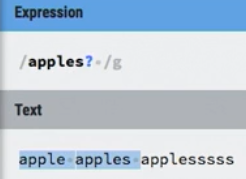
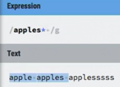
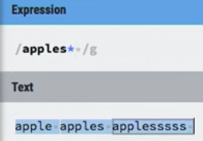
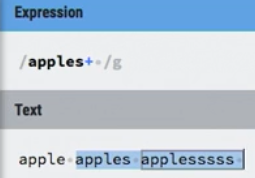
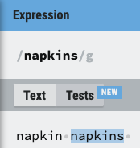
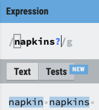

Repitition characters
| Metacharacter | meaning |
|---|---|
| * | preceding item, zero or more times |
| + | preceding item, one or more times |
| ? | preceding item, zero or one time |
these characters go after what we want to be repeated
- * the preceding character does not have to be there (it's optional)
- with the + sign, the preceding character has to be there at least once
- and the ?, it can either be there once or not at all (maybe there or not there)
examples
the most common is /.+/ which means any character followed by anything to anything besides new line (when global is on) but Not line return
/Good .+\./ matches "Good morning." "Good Day." "Good evening." "Good night."
the + plus matches anything but new line (when global is off)
 
/\d+/ matches "90210"
/\s[a-z]+[ed]\s matches any lowercase word ended in "ed"
| Metacharacter | meaning |
|---|---|
| * | preceding item, zero or more times |
| + | preceding item, one or more times |
| ? | preceding item, zero or one time |
/apples*/ would match "apple" "apples" or "applesssss", not sure why apple is inclued?
-because the "s" can be there but doesnt have to be
/apples+/ would match "apples" and "applessss" but Not "apple",why?
-because the s has to there at least once
/apples?/ would match "apple" and "apples" but Not "applessss"
 doesn't match applesssss because of no space in text after applesssss
 why? 
The below are the same
/\d\d\d\d*/ matches any number three digits or more (4th \d is optional)
/\d\d\d+ would also match any number with three digits or more
/colou?r/, it matches "color" and "colour"
because the "u" can be there but doesn't have to be
this makes ? great for finding singular or plural words
like apples? napkins?
 